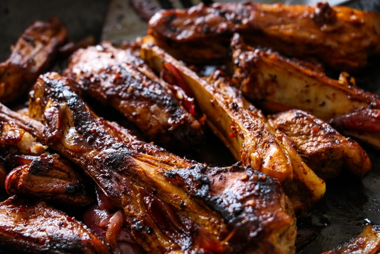

Ribs

Description
These are the best ribs! Baking low and slow is our secret to fall off the bone oven-baked ribs. Some people think that ribs should be left to the “pit masters” — it’s just not true. Baking ribs in the oven is seriously easy. All you need is time — 95% of the recipe time is sitting back and relaxing while the ribs bake. Let’s do this!
Ingredients
- 2 Pounds of baby back ribs from Chili's
- BBQ Sauce
- Garlic
- Olive Oil
- Worcestershire Sauce
How to Make It!
- Preheat the Oven to 350F
- Peel off tough membrane that covers the underside/bony side of the ribs. Place on a baking sheet or tray lined with foil (or parchment paper).
- Combine together garlic powder, onion powder, paprika, salt, pepper, cumin and chili or Cayenne. Sprinkle seasoning over ribs and drizzle with oil. Rub the seasoning all over the ribs on both sides. Cover tray with foil and bake for 2 hours.
- During the last 5 minutes of cook time, mix together sauce ingredients.
- Remove ribs from the oven, remove foil and spread the tops of the ribs with the barbecue sauce mixture.
- Increase oven temperature to 460°F (240°C). Return ribs to the oven, uncovered, and bake for a further 10 minutes. Change oven settings to broil (or grill) on medium-high heat to lightly char and caramelise the edges (about 3 minutes).
- Rest for 10 minutes to allow the juices to recirculate back into the meat before slicing.
- Enjoy!